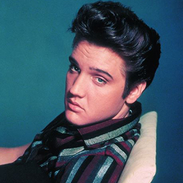
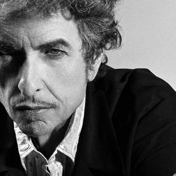

En esta parte de la página tendremos las LEYENDAS. Daremos un repaso a músicos que cambiaron para siempre el mundo del rock y que eran unos virtuosos con las manos y con su voz.
Elvis Presley
Elvis Aaron Presley, Nacido en Tupelo, Misisipi; el día 8 de enero de 1935. Murio
en Memphis, Tennessee el día 16 de agosto de
1977. Fue uno de los cantantes estadounidenses más populares del siglo XX considerado como un ícono
cultural y conocido ampliamente bajo su nombre de pila, Elvis. Se hace referencia a él
frecuentemente como «El Rey del Rock and Roll» o simplemente «El Rey».
Nació en Tupelo, Misisipi, pero cuando tenía 13 años, se mudó junto a su familia a Memphis,
Tennessee, donde en 1954 comenzó su carrera artística cuando el dueño de Sun Records, Sam Phillips,
vio en él la manera de expandir la música afroamericana. Acompañado por el guitarrista Scotty Moore
y el contrabajista Bill Black, fue uno de los creadores del rockabilly, un estilo que consiste en
una fusión de música country y rhythm and blues.
Tras llegar a un acuerdo con el que fue su apoderado durante casi dos décadas, el coronel Tom
Parker, la compañía discográfica RCA Records consiguió un contrato para difundir su música. El
primer sencillo con esta empresa, «Heartbreak Hotel», lanzado en enero de 1956, se convirtió en un
éxito número uno. Pronto, tras sus apariciones en los medios, se convirtió en la figura principal
del popular sonido del rock and roll, con una serie de presentaciones televisivas y éxitos que
llegaron a la cima de las listas de ventas.
En 1973, protagonizó el primer concierto teletransmitido, de ámbito mundial vía satélite,5678
Aloha from Hawaii, visto aproximadamente por 1500 millones de personas. Finalmente, el consumo
excesivo de medicamentos prescritos comprometió gravemente su salud, hasta que en 1977 murió
súbitamente a la edad de 42 años.
Presley es considerado como una de las figuras más importantes de la cultura popular del siglo XX.
Tenía una voz versátil y un inusual éxito en muchos géneros, entre ellos el country, el pop, las
baladas, el gospel y el blues. Asimismo, se trata del solista con más ventas en la historia de la
música popular. Nominado a 14 premios Grammy, ganó tres y recibió uno en la categoría a
la carrera artística a la edad de 36 años, además de figurar en diversos salones de la fama
musicales.
Bob dylan

Bob Dylan sería una leyenda un poco rara en esta página, pero como ni si quiera el mismo es capaz de
establecerse un género, y toco todos los géneros posibles pues lo metemos aqui, ya que absolutamente
todo el mundo tuvo que escuchar alguna vez alguna canción de este personaje tan pintoresco, además
de
que fue uno de los músicos mas influyentes y mas controvertidos de todo el siglo XX.
Bob Dylan, nacido en Duluth, Minesota, Estados Unidos el 24 de mayo de 1941), registrado al nacer
como Robert
Allen Zimmerman , es un músico, compositor, cantante y poeta estadounidense, ampliamente considerado
como una de las figuras más
prolíficas e influyentes en la música popular del siglo XX y de comienzos del siglo XXI.
Gran parte de su trabajo más célebre data de la década de 1960, en la que se dio a conocer como
cantautor folk con composiciones como «Blowin' in the Wind» y «A Hard Rain's a-Gonna Fall» con un
importante contenido de protesta social. Tras dejar atrás la música folk, Dylan modificó la música
popular en 1965 con el álbum Highway 61 Revisited, uno de los trabajos musicales más influyentes del
siglo XX, en el que combinó la música rock con composiciones complejas y literarias influidas
por imaginería surrealista. Su primer sencillo, «Like a Rolling Stone», fue elegido como la mejor
canción de todos los tiempos por la revista Rolling Stone y alcanzó el segundo puesto en la lista
estadounidense
Tras Highway 61 Revisited, Bob Dylan consolidó su interés por el rock y el blues con trabajos como
Blonde on Blonde y exploró nuevos registros musicales como el country rock en Nashville Skyline y
Self Portrait. A lo largo de la década de 1970, después de sufrir un accidente de motocicleta en
1966 y no salir de gira durante ocho años, obtuvo un mayor éxito comercial con discos como Planet
Waves, Blood on the Tracks y Desire, números uno en su país natal. A finales de la década, abrió
una nueva etapa musical con la publicación de Slow Train Coming, con una profunda temática
religiosa. Aunque el trasfondo religioso y su interés por la Biblia se mantuvo a lo largo de los
años, después de Infidels comenzó a grabar discos con un mayor peso de temas seculares como Knocked
Out Loaded y Down in the Groove, que obtuvieron peores resultados comerciales y de crítica.
La carrera musical de Dylan resurgió a finales de la década de 1980 con el lanzamiento de Oh Mercy,
producido por Daniel Lanois calificado por la prensa como el «regreso a la formalidad musical», y
con la formación de The Traveling Wilburys con George Harrison, Roy Orbison, Tom Petty y Jeff Lynne.
Tras un breve retorno al folk a principios de la década de 1990, en trabajos como Good as I Been to
You y World Gone Wrong, Dylan volvió a trabajar con Lanois en Time Out of Mind, un álbum con un
«sonido nebuloso y ominoso» que ganó el Grammy al álbum del año en la 40.ª entrega de los
premios. Desde Time Out of Mind, publicado en 1997, sus álbumes más recientes "Love and
Theft", "Modern Times y "Together Through" Lifehan obtenido el respaldo de la prensa musical y del
público.
Las letras de Dylan incorporan una variedad de temas sociales, políticos, filosóficos y literarios
que desafiaron la música pop convencional existente y apelaron generalmente a la contracultura
emergente en la época. Influido por Woody Guthrie, Robert Johnson y Hank Williams, Dylan amplió y
personalizó géneros musicales a lo largo de cinco décadas de carrera musical, en las que exploró la
tradición musical estadounidense con el folk, el blues, el country, el gospel, el rock and roll y el
rockabilly, así como la música folk inglesa, escocesa e irlandesa, pasando por el jazz y el
swing.2021 Dylan toca la guitarra, la armónica y los teclados, y respaldado por una alineación de
músicos cambiante, ha salido de gira anualmente desde finales de la década de 1980, en lo que se
conoce como Never Ending Tour, en español: La gira interminable.
A lo largo de su carrera, Dylan ha sido reconocido y honrado por sus composiciones, interpretaciones
y grabaciones. Sus discos le han válido varios Grammys, Globos de Oro y premios de la Academia, y su
nombre se halla en el Salón de la Fama del Rock and Roll, el Salón de la Fama de Compositores de
Nashville y el Salón de la Fama de los Compositores. En enero de 1990, fue investido Caballero de la
Orden de las Artes y las Letras por el Ministro de Cultura de Francia Jack Lang. En 1999, fue
incluido en la lista de las cien personas más influyentes del siglo XX elaborada por la revista
Time. En el año 2000, ganó el Premio de Música Polar de la Real Academia Sueca de Música, y en
2004 alcanzó el segundo puesto en la lista de los cien mejores artistas de todos los tiempos
elaborada por la revista Rolling Stone, después de The Beatles. El 13 de junio de 2007 fue
premiado con el Premio Príncipe de Asturias de las Artes, y un año después recibió un
reconocimiento honorario del Premio Pulitzer por su «profundo impacto en la música popular y en la
cultura norteamericana, marcado por sus composiciones líricas de extraordinario poder poético». En
este contexto, desde 1996 diversos autores y académicos nominaron a Dylan para la candidatura del
Premio Nobel de Literatura. En mayo de 2012, recibió la Medalla Presidencial de la Libertad
por parte del presidente Barack Obama.
El 13 de octubre de 2016, la Academia Sueca le otorgó el Premio Nobel de Literatura30 por «haber
creado una nueva expresión poética dentro de la gran tradición de la canción estadounidense».